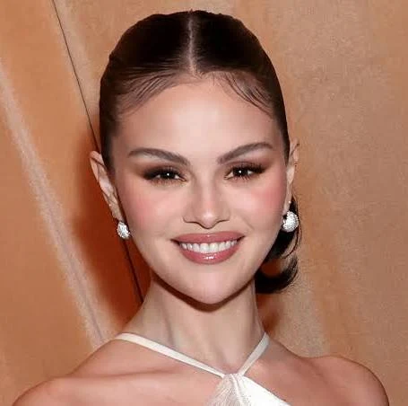
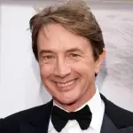
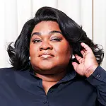

The Arconia's Residents [and suspects]

Mabel Mora
played by: Selena Gomez
As the mysterious, reserved artist Mabel Mora in Only Murders in the Building, Selena Gomez brings a complicated history with the Arconia to the amateur true‐crime podcasting trio. In real life, Gomez is a multifaceted American actress, singer, and producer who gained prominence as Alex Russo on the Disney Channel's Wizards of Waverly Place. She has also released three solo studio albums and founded a cosmetics company, Rare Beauty.
Charles Haden‐Savage
played by: Steve Martin
As the quiet, fastidious, semi-retired actor Charles‐Haden Savage in Only Murders in the Building, Steve Martin plays the reserved elder of the amateur podcasting trio, known for his single-hit 1990s TV show Brazzos. In real life, Steve Martin is a creative titan: a legendary comedian, actor (The Jerk; Planes, Trains and Automobiles), writer, and celebrated banjo player who co-created the series, solidifying his status as an artistic polymath whose genius spans six decades.

Oliver Putnam
played by: Martin Short
As the ambitious but often financially struggling Broadway director Oliver Putnam in Only Murders in the Building, Martin Short brings his theatrical flair to the amateur podcasting trio. In his real life, Martin Short is a revered Canadian comedian, actor, and writer whose extensive career spans over five decades, gaining prominence on SCTV and Saturday Night Live and in films such as Father of the Bride. An Emmy and Tony Award winner, Short is a comedy icon known for his versatile characters.
Cinda Canning
played by: Tina Fey
As Cinda Canning, Tina Fey plays a highly successful, two-time Peabody Award-winning true‐crime podcaster and the idol of the main trio. She is often portrayed as a rival and a somewhat self‐absorbed media mogul. In her real life, Tina Fey is an American actress, comedian, writer, and producer known for her work in comedy, including being the first female head writer for Saturday Night Live and for creating and starring in the acclaimed sitcom 30 Rock. An Emmy and Golden Globe winner, Fey is a highly influential figure in television and film.

Detective Williams
played by: Da'vine Joy
As Detective Williams in Only Murders in the Building, Da'Vine Joy Randolph plays the lead police investigator who initially dismisses the trio's theories, but eventually comes to respect their amateur crime‐solving skills. In real life, Da'Vine Joy Randolph is an accomplished American actress who won an Academy Award for Best Supporting Actress for her role in the 2023 film The Holdovers. Known for her powerful stage and screen presence, her career spans Broadway, film, and television.
Bunny Folger
played by: Jayne Houdyshell
As Bunny Folger in Only Murders in the Building, Jayne Houdyshell portrays the initially cranky and imposing long‐time Board President of the Arconia. She is revealed to be a woman who deeply cared for the building and was struggling with loneliness. In real life, Jayne Houdyshell is an acclaimed American actress, most widely known for her prolific theater career, including winning a Tony Award for her role in The Humans. Her career spans decades of work on Broadway, film, and television.
Uma Heller
played by: Jackie Hoffman
As Uma Heller in Only Murders in the Building, Jackie Hoffman portrays an cantankerous long‐time Arconia resident who expresses her dislike for the chaos the central trio brings to the building. In real life, Jackie Hoffman is an American actress, singer, and comedian known for her prominent work in theatre, including Broadway roles in Hairspray and The Addams Family, and for which she won a Theatre World Award. She is an Emmy nominee for her role as Mamacita in Feud: Bette and Joan.
Lester, the Arconia's Doorman
played by: Teddy Coluca
As Lester, the beloved doorman of the Arconia in Only Murders in the Building, Teddy Coluca plays a recurring figure who has worked in that position for over 32 years, giving him an intimate view of the building's residents and history. In his real life, Teddy Coluca is an actor who has appeared in over 70 projects across film and television, with recurring roles in series such as 30 Rock, The Marvelous Mrs. Maisel, and The Blacklist.
Poppy White
played by: Adina Verson
As Poppy White in Only Murders in the Building, Adina Verson plays the timid and overworked assistant to true‐crime podcaster Cinda Canning. The character is known for being harassed and abused by Cinda, but the show later reveals Poppy's true, ambitious nature and identity as Becky Butler, the woman at the heart of the "All Is Not OK in Oklahoma" podcast. In real life, Adina Verson is an American actor primarily known for her work on the stage, including a Broadway debut in the Tony Award‐winning production of Indecent.
Theo Dimas
played by: James Caverly
As Theo Dimas in Only Murders in the Building, James Caverly plays the deaf son of Teddy Dimas, with whom he is involved in an illegal operation. The character is known for his complex personality and is implicated in the death of a former Arconia resident years prior to the events of the series. In real life, James Caverly is a deaf American actor who graduated with a B.A. in Theatre Arts from Gallaudet University and has worked extensively as a stage actor, director, and ASL consultant, including performing on Broadway.
Sazz Pataki
played by: Jane Lynch
As Sazz Pataki in Only Murders in the Building, Jane Lynch plays Charles‐Haden Savage's charismatic, easygoing, and loyal stunt double from their time on the show Brazzos. Sazz is a dear friend to Charles, often helping him to navigate his personal life. In her real life, Jane Lynch is an acclaimed American actress, comedian, and singer, widely known for playing the iconic character Sue Sylvester in the series Glee. An Emmy and Golden Globe winner, Lynch is celebrated for her versatility and comedic television roles.
Will Putnam
played by: Ryan Broussard
As the sensitive, adopted son of Oliver, Will Putnam in Only Murders in the Building is a supportive figure in his father's life, though he often worries about Oliver's financial stability. In his real life, Ryan Broussard is an American actor best known for his recurring role in Only Murders in the Building and for his main cast role as James in the medical drama Alert: Missing Persons Unit. He is an alumnus of The Juilliard School.
Sting
played by: Sting
As Sting in Only Murders in the Building, the renowned musician plays a fictionalized version of himself who lives in the Arconia and quickly becomes a prime suspect in the murder of Tim Kono. In real life, Sting (born Gordon Matthew Thomas Sumner) is a highly decorated English musician, actor, and songwriter, famous for being the frontman, principal songwriter, and bassist for the band The Police. He launched a successful solo career in 1985 and has received numerous accolades, including 17 Grammy Awards.
Ursula
played by: Vanessa Aspillaga
As Ursula in Only Murders in the Building, Vanessa Aspillaga plays the Arconia's cynical and often unhelpful building manager. The character is known for her abrupt demeanor, frequently peddling black market Arconia merchandise out of her office. In real life, Vanessa Aspillaga is an American actress and a founding member of the LAByrinth Theater Company in New York City. She is known for her work across film and television, including roles in Hustlers and A Journal for Jordan.
Tim Kono
played by: Julian Cihi
As Tim Kono in Only Murders in the Building, Julian Cihi plays the Arconia resident whose mysterious death in the first episode spurs Charles, Oliver, and Mabel to launch their true-crime podcast. Tim was a secluded financial analyst who was childhood friends with Mabel (as part of the "Hardy Boys") and was involved in an investigation into the Dimas family before his death. In his real life, Julian Cihi is a Japanese‐American actor known for his roles in television shows like The Tick.
Howard Morris
played by: Michael Cyril Creighton
As the quirky, cat-loving Arconia resident Howard Morris in Only Murders in the Building, Michael Cyril Creighton plays a nervous neighbor whose deep knowledge of the building's residents makes him a valuable, if overly dramatic, source of information for the podcasting trio. In real life, Michael Cyril Creighton is an American actor and writer known for his work in film and television, including roles in Spotlight and Game Night. He has also appeared in numerous TV series and is recognized for his comedic timing and character work.
Jan Bellows
played by: Amy Ryan
As Jan Bellows in Only Murders in the Building, Amy Ryan plays the Arconia resident and accomplished bassoonist whose romance with Charles‐Haden Savage (Steve Martin) becomes a central storyline in Season 1. Jan's seemingly warm and artistic personality hides darker secrets that ultimately tie her to the murder of Tim Kono, making her one of the show's most complex and memorable characters. In her real life, Amy Ryan is an acclaimed actress with a career spanning stage, film, and television. She earned an Academy Award nomination for her role in Gone Baby Gone (2007), and is beloved by TV audiences for her performances as Beadie Russell in The Wire and Holly Flax in The Office.
Teddy Dimas
played by: Nathan Lane
As Teddy Dimas in Only Murders in the Building, Nathan Lane plays a wealthy deli owner and Arconia resident who runs an illegal jewelry smuggling operation with his deaf son Theo. The character initially presents himself as a friendly neighbor and potential investor in Oliver's projects, but is later revealed to be deeply involved in criminal activities connected to Tim Kono's investigation. In real life, Nathan Lane is one of Broadway's most celebrated actors, a three-time Tony Award winner known for his iconic roles in musicals like The Producers and A Funny Thing Happened on the Way to the Forum. His decades-long career spans film and television, earning him recognition as a versatile and beloved performer.